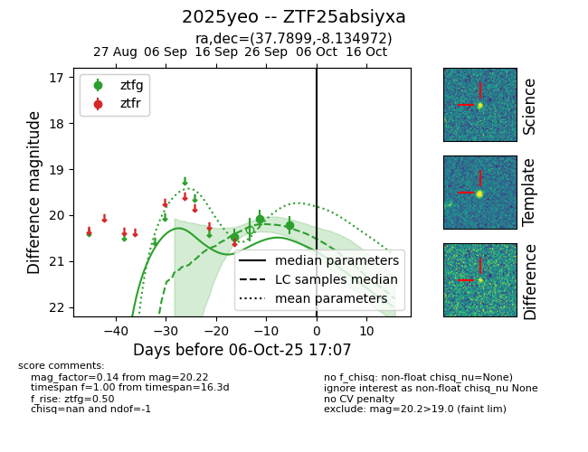
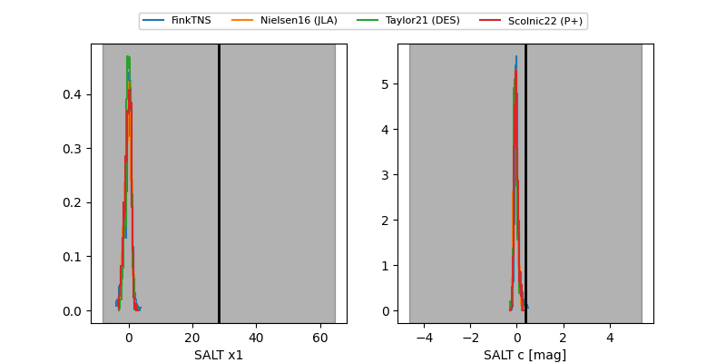

FINK: ZTF25absiyxa
Lasair: ZTF25absiyxa
ALeRCE: ZTF25absiyxa
TNS: 2025yeo
YSE: 2025yeo
ZTF25absiyxa (ztf,fink)
2025yeo (tns,yse)
equatorial (ra, dec) = (37.7899,-8.13497)
galactic (l, b) = (178.7492,-59.70761)


last ztfg=20.22
3 ztfg detections